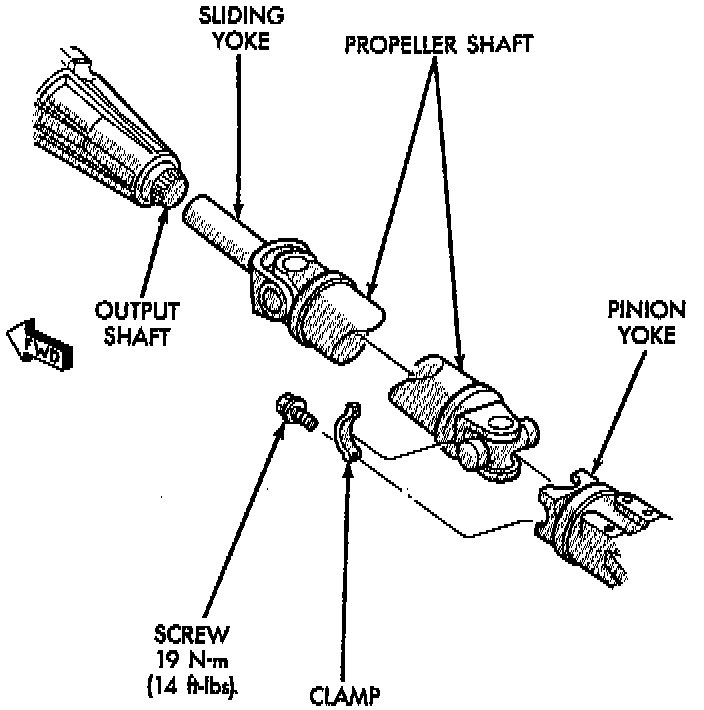

Rear CV Joint

REMOVAL
1. Raise and support vehicle on safety stands.
2. Shift the transmission and transfer case, if necessary, to their Neutral positions.
3. Using a suitable marker, mark a line across the axle pinion yoke and the propeller shaft yoke for installation reference.
4. Remove the bolts holding the universal joint clamps to the pinion yoke.
5. Slide the slip yoke off of the transfer case, output shaft and remove the propeller shaft.
INSTALLATION
1. Slide the slip yoke on the transfer case, output shaft.
2. Align the installation reference marks made on the propeller shaft and pinion yoke.
3. Position universal joint into pinion yoke.
4. Install the universal joint clamp and clamp bolts to the pinion yoke. Tighten bolts to 19 Nm (14 ft. lbs.).
5. Lower the vehicle.